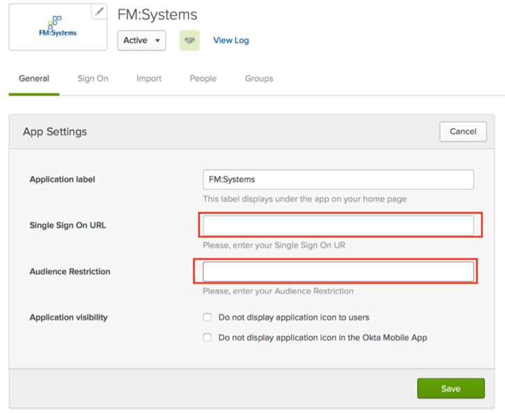

Contact FM:Systems Consultants or Support team and request that they enable SAML for your app.
Provide the following:
Identify Provider URL:
Sign into the Okta Admin Dashboard to generate this variable.
x.509 Cerficate:
Sign into the Okta Admin dashboard to generate this value.
FM:Systems will process your request and send you a confirmation email letting you know when SAML is available. They will also provide you with the following:
Single Sign On URL.
Audience Restriction.
In Okta, select the General tab for the FM:Systems app, and enter the values you just received, as shown below:

Click Save.
Done!
Notes:
IdP-initiated flows are supported.
SP-initiated flows are still in testing.
Just In Time (JIT) provisioning is not supported.